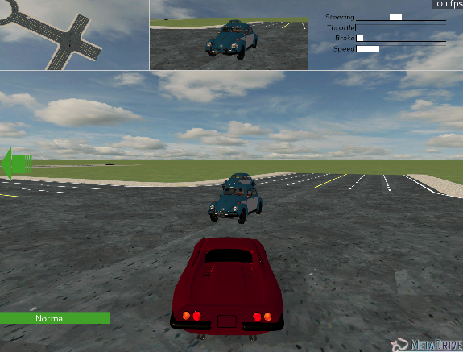
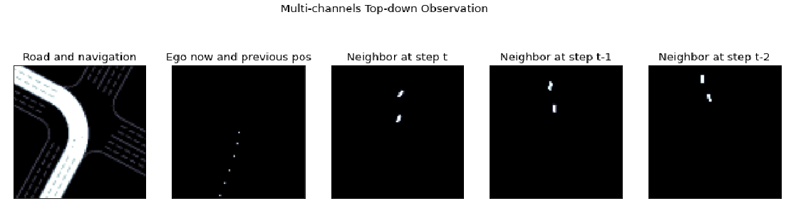

Metadrive¶
概述¶
MetaDrive 是一个高效的组合式 (Compositional) 的驾驶模拟器，驾驶的目标是控制一辆（或者多辆）汽车安全且按时地从起点开到终点。它具有以下特性:
组合式: 它支持生成具有各种道路地图和交通设置的（理论上可以无限的）场景，可用于 RL 泛化性的研究。
轻量化：易于安装和运行。它在标准 PC 上可以运行高达每秒300帧 (up to 300 FPS)。
高逼真：精确的物理模拟和多种类型的输入，包括激光雷达、RGB 图像、自上而下的语义地图和第一人称视角图像。用户可以自行选择强化学习中的 observation 的种类。
以下主要以观测输入 (observation) 是自上而下语义地图的情况展开介绍。

安装¶
安装方法¶
用户可以选择通过 pip 一键安装, 或者源码安装。
注：如果用户没有 root 权限，请在 install 的命令后面加上 --user。
# Install Directly
pip install metadrive-simulator
# Install from source code
git clone https://github.com/metadriverse/metadrive.git
cd metadrive
pip install -e .
验证安装¶
安装完成后，可以通过在 Python 命令行中运行如下命令验证是否安装成功：
from metadrive import MetaDriveEnv
env = MetadriveEnv()
obs = env.reset()
print(obs.shape) # 输出 (259,)
镜像¶
DI-engine 的镜像包含 DI-engine 框架本身，可通过docker pull opendilab/ding:nightly 获取，
或访问docker hub获取更多镜像。 MetaDrive 目前没有对应的镜像。
变换前的空间（原始环境）¶
具体细节，可以参考 MetaDrive 的代码实现 MetaDrive 。
观察空间¶
车辆的观察空间为259维的 numpy 数组，数据类型为 float32，obs shape 为 (259,)。观察空间包含以下3部分内容：
ego_state ： 即当前状态，例如航向，转向，速度和到边界的相对距离。
navigation ： 即导航信息，引导车辆驶向目的地的检查点 (checkpoints)。
surrounding ： 即周围的信息，由激光雷达生成，通常使用240个激光扫描半径50米的临近区域。
动作空间¶
MetaDrive 环境的动作空间是2维的连续动作，其有效范围为 [-1, 1]。 通过这样的设计，每个智能体的动作空间都被固定为 gym.spaces.Box(low=-1.0, high=1.0, shape=(2, ))。
第一个维度代表转向角 (steering)。当动作取1或者-1时分别代表方向盘向左或者向右转到最大转向角度，取0的时候代表方向盘朝向正前方。
第二个维度代表加速或者刹车。当范围在 (0,1) 区间时候代表加速，范围在 (-1,0) 代表刹车；取0的时候代表不采取任何动作。
同时，它也提供了 一个名为 extra_action_dim (int) 的配置，例如，如果我们设置 config[“extra_action_dim”] = 1，那么每个智能体的动作空间将变为 Box(-1.0, 1.0, shape=(3, ))。 这允许用户编写引入更多输入操作维度的环境包装器。
奖励空间¶
MetaDrive 中默认的奖励函数包含了一个密集的（驾驶过程中的）奖励和一个稀疏的终局奖励。
密集奖励: 反映了在每一个 step 下，车辆在 Frenet 坐标中朝向目的地的纵向运动的程度。
终端奖励: 只有在车辆成功到达目的地的时候得到。具体细节在下面 termination_reward里描述。
事实上， MetaDrive 提供了一个复杂的奖励函数，我们可以从 config dict 里面自定义他们的奖励函数，完整的奖励函数由以下四个部分构成：
驾驶奖励 (driving_reward)： 在t-1到t时刻，在当前车道线开出的纵向距离，它是一个密集奖励。
速度奖励 (speed_reward)： 当前时刻的速度，速度越大，则奖励越大，它也是一个密集奖励。
横向比例 (use_lateral_reward)： 它提供 [0, 1] 范围内的乘数，指示自我车辆是否远离当前车道的中心，与驾驶奖励配合使用．如果为True，则驾驶奖励的大小不仅取决于纵向路程，还取决于横向坐标与车道线正中间的距离。
终止奖励 (terminaltion_reward)： 在 episode结束时候，其他密集奖励将被禁用，并根据车辆的状态返回一个奖励。具体的情况可以分为：
到达终点： 车辆获得一个成功完成目标的奖励 (success_reward)；
开出道路： 车辆获得一个对应的惩罚 (out_of_road_penalty)；
撞到他车： 车辆获得一个对应的惩罚 (crash_vehicle_penalty)；
撞到障碍： 车辆获得一个对应的惩罚 (crash_object_penalty)。
其他¶
如果出现以下情况，则判定 episode 结束：
车辆成功到达终点；
撞到其他车辆或者障碍物；
开出道路以外。
随机性：
初始时刻的随机性：车辆会随机初始化到一条道路的某一条车道线上。
道路的随机性：根据随机种子的不同，车道线的数目，道路不同模块的拼接，以及终点的选择都会有所变化。
变换后的空间（RL 环境）¶
观察空间¶
区别于原始版本里面，观测空间被描述为一个259维度的向量，在DI-engine里， 汽车的观察空间被定义为俯视图，大小为 5x84x84，其中5代表了通道数，后两个维度(84x84)代表了每个通道的图片的大小。 五个通道的语义为：
道路信息和导航信息 (Road and Navigation)；
自身位置和自身历史位置 (Ego now and previous pos)；
周围车辆在 t 时刻的俯视图 (Neigbor at step t)；
周围车辆在t-1时刻的俯视图 (Neigbor at step t-1)；
周围车辆在t-2时刻的俯视图 (Neigbor at step t-2)。
- 以下图的驾驶场景为例，红色车辆为我们控制的 agent ,它正在执行左转操作，与两辆相邻的蓝色车辆发生交互。
- 
- 在当前场景下，车辆的 observation 可以由以下五张图片来表征。
- 
动作空间¶
无变化
奖励空间¶
无变化
其他¶
环境
step方法返回的info必须包含eval_episode_return键值对，表示整个 episode 的评测指标，在 MetaDrive 中为整个 episode 的奖励累加和。
其他¶
惰性初始化¶
为了便于支持环境向量化等并行操作，具体的环境实例一般采用惰性初始化的方法，即在环境的__init__方法不初始化真正的原始环境实例，只是设置相关参数和配置值，
而在第一次调用reset方法时初始化具体的原始环境实例。
随机种子¶
可以使用 _reset_global_seed的方法设定环境的随机种子，如果不手动设定，则环境会随机采样出随机种子设定环境。
训练和测试环境的区别¶
训练环境使用动态随机种子，即每个 episode 的随机种子都不同，都是由一个随机数发生器产生，但这个随机数发生器的种子是通过环境的
seed方法固定的。测试环境使用静态随机种子，即每个 episode 的随机种子相同，通过
seed方法指定。
DI-zoo 可运行代码示例¶
各个算法在该环境上的训练配置文件在目录 github
link
里，对于具体的配置文件，例如metadrive_onppo_config.py，使用如下的 demo 即可运行：
from easydict import EasyDict
from functools import partial
from tensorboardX import SummaryWriter
import metadrive
import gym
from ding.envs import BaseEnvManager, SyncSubprocessEnvManager
from ding.config import compile_config
from ding.model.template import QAC, VAC
from ding.policy import PPOPolicy
from ding.worker import SampleSerialCollector, InteractionSerialEvaluator, BaseLearner
from dizoo.metadrive.env.drive_env import MetaDrivePPOOriginEnv
from dizoo.metadrive.env.drive_wrapper import DriveEnvWrapper
metadrive_basic_config = dict(
exp_name='metadrive_onppo_seed0',
env=dict(
metadrive=dict(
use_render=False,
traffic_density=0.10,
map='XSOS',
horizon=4000,
driving_reward=1.0,
speed_reward=0.1,
use_lateral_reward=False,
out_of_road_penalty=40.0,
crash_vehicle_penalty=40.0,
decision_repeat=20,
out_of_route_done=True,
),
manager=dict(
shared_memory=False,
max_retry=2,
context='spawn',
),
n_evaluator_episode=16,
stop_value=255,
collector_env_num=8,
evaluator_env_num=8,
),
policy=dict(
cuda=True,
action_space='continuous',
model=dict(
obs_shape=[5, 84, 84],
action_shape=2,
action_space='continuous',
bound_type='tanh',
encoder_hidden_size_list=[128, 128, 64],
),
learn=dict(
epoch_per_collect=10,
batch_size=64,
learning_rate=3e-4,
entropy_weight=0.001,
value_weight=0.5,
clip_ratio=0.02,
adv_norm=False,
value_norm=True,
grad_clip_value=10,
),
collect=dict(n_sample=3000, ),
eval=dict(evaluator=dict(eval_freq=1000, ), ),
),
)
main_config = EasyDict(metadrive_basic_config)
def wrapped_env(env_cfg, wrapper_cfg=None):
return DriveEnvWrapper(MetaDrivePPOOriginEnv(env_cfg), wrapper_cfg)
def main(cfg):
cfg = compile_config(
cfg, SyncSubprocessEnvManager, PPOPolicy, BaseLearner, SampleSerialCollector, InteractionSerialEvaluator
)
collector_env_num, evaluator_env_num = cfg.env.collector_env_num, cfg.env.evaluator_env_num
collector_env = SyncSubprocessEnvManager(
env_fn=[partial(wrapped_env, cfg.env.metadrive) for _ in range(collector_env_num)],
cfg=cfg.env.manager,
)
evaluator_env = SyncSubprocessEnvManager(
env_fn=[partial(wrapped_env, cfg.env.metadrive) for _ in range(evaluator_env_num)],
cfg=cfg.env.manager,
)
model = VAC(cfg.policy.model)
policy = PPOPolicy(cfg.policy, model=model)
tb_logger = SummaryWriter('./log/{}/'.format(cfg.exp_name))
learner = BaseLearner(cfg.policy.learn.learner, policy.learn_mode, tb_logger, exp_name=cfg.exp_name)
collector = SampleSerialCollector(
cfg.policy.collect.collector, collector_env, policy.collect_mode, tb_logger, exp_name=cfg.exp_name
)
evaluator = InteractionSerialEvaluator(
cfg.policy.eval.evaluator, evaluator_env, policy.eval_mode, tb_logger, exp_name=cfg.exp_name
)
learner.call_hook('before_run')
while True:
if evaluator.should_eval(learner.train_iter):
stop, rate = evaluator.eval(learner.save_checkpoint, learner.train_iter, collector.envstep)
if stop:
break
# Sampling data from environments
new_data = collector.collect(cfg.policy.collect.n_sample, train_iter=learner.train_iter)
learner.train(new_data, collector.envstep)
learner.call_hook('after_run')
collector.close()
evaluator.close()
learner.close()
if __name__ == '__main__':
main(main_config)
基准算法性能¶
MetaDrive（测试局的平均 episode return 大于等于250视为算法收敛到近似最优值）。
MetaDrive + PPO